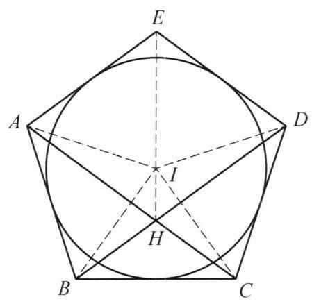

6 例 6：凸五边形垂线构造与垂心转换
6.1 题目
已知凸五边形 {ABCDE} 满足 {AB} = {BC} = {CD},\angle {EAB} = \angle {BCD} ， \angle {EDC} = \angle {CBA} . 证明:过点 E 作 {BC} 的垂线与 {AC},{BD} 三线共点.

图 1-5
6.2 参考解答
如图 1-5,设 {AC},{BD} 的中垂线交于点 I ，由题设条件 {AB} = {BC} = {CD} 得 {AC},{BD} 的中垂线分别过点 B, C . 由 {BD}\perp {CI},{AC}\perp {BI} ，知 {AC} 与 {BD} 的交点 H 是 \triangle {BIC} 的垂心，于是 {IH}\perp {BC} .
因为 {IB},{IC} 分别为 \angle {ABC},\angle {BCD} 的平分线, {IA} = {IC},{IB} = {ID} ,且 {AB} = {BC} = {CD} ,所以 \triangle {IAB} \cong \triangle {ICB} \cong \triangle {ICD} ,则 \angle {IAB} = \angle {ICB} = \; \frac{1}{2}\angle {BCD} = \frac{1}{2}\angle {EAB} ，即 {AI} 平分 \angle {EAB} ，同理 {DI} 平分 \angle {CDE} . 这说明圆 I 是凸五边形 {ABCDE} 的内切圆，故
\angle {BIE} = {360}^{ \circ } - \angle {EAB} - \angle {ABI} - \angle {AEI}
= {360}^{ \circ } - \angle {EAB} - \frac{1}{2}\angle {ABC} - \frac{1}{2}\angle {AED}
= {360}^{ \circ } - \angle {EAB} - \frac{1}{2}\angle {ABC} - \left( {{270}^{ \circ } - \angle {EAB} - \angle {ABC}}\right)
= {90}^{ \circ } + \frac{1}{2}\angle {ABC} = {90}^{ \circ } + \angle {IBC}.
所以 {EI} \perp {BC} . 原问题得证.
注:首先通过题设条件定出点 I ，此时大概能猜出点 I 是该五边形 {ABCDE} 的内心，只需再证明 {AI} ， {DI} 分别为角平分线即可，这通过三角形全等实现.
6.3 解题思路与分析
这份证明之所以让人觉得“费解”，是因为教材采用了“综合法”（由因导果）的书写方式——一上来直接抛出辅助点 I 的定义，中间又把几步关键的几何直觉压缩成了代数恒等变形，抹去了背后的“分析法”（执果索因，即逆向思维）过程。
如果我们把思考的顺序倒过来，还原解题者在草稿纸上的探索过程，你会发现每一步其实都是顺理成章、甚至是“被迫”做出的唯一选择：
6.3.1 第一步：从结论倒推——如何处理“过交点作垂线”？（垂心转换法）
题目要证：AC、BD 与过 E 垂直于 BC 的直线三线共点。 设 AC 与 BD 交于点 H，命题等价于证明：EH \perp BC。
在平面几何中，直接处理两条直线的交点 H 通常很麻烦。面对“已知 H = AC \cap BD，求证 XH \perp BC”这类问题，有一个极其经典的标准套路——构造三角形的垂心： * 如果能把 AC（即 CH）和 BD（即 BH）看作某个以 BC 为底边的 \triangle IBC 的两条高线，那么交点 H 就自动成为 \triangle IBC 的垂心。 * 一旦 H 是 \triangle IBC 的垂心，根据垂心性质，第三条连线必然满足 IH \perp BC！ * 这样一来，要证 EH \perp BC，就转化为证明 E, I, H 三点共线，或者更简单地——直接证明 EI \perp BC！
这一步的战略意义在于“消点”：引入满足 IB \perp AC 且 IC \perp BD 的点 I 后，原本难以处理的交点 H 就完成了历史使命，彻底从后续证明中消失了。
6.3.2 第二步：顺水推舟——逆向需求与正向条件的“完美碰撞”
按照第一步的设想，我们需要过点 B 作 AC 的垂线，过点 C 作 BD 的垂线，两线交于点 I。 此时再回头看题目的第一个已知条件：AB = BC = CD。
奇迹发生了： 1. 在等腰 \triangle ABC 中（AB = BC），过顶点 B 作底边 AC 的垂线 IB，由等腰三角形“三线合一”，这条线同时也是 AC 的中垂线 和 \angle ABC 的平分线！ 2. 在等腰 \triangle BCD 中（BC = CD），过顶点 C 作底边 BD 的垂线 IC，同样由“三线合一”，这条线同时也是 BD 的中垂线 和 \angle BCD 的平分线！
解题直觉：当“从结论倒推所需要的辅助线”（高线 IB, IC）与“从条件顺推最自然的特殊线”（等腰三角形顶角平分线/底边中垂线）完全重合时，说明这个交点 I 绝对是整道题的核心命脉。教材一上来写“设 AC, BD 的中垂线交于点 I”，正是把这一步逆向探索包装成了正向定义。
6.3.3 第三步：挖掘性质——为什么会想到“五边形内切圆”？
确定了点 I 是 \angle ABC 和 \angle BCD 的角平分线交点后，接下来完全是条件反射式的顺推：
利用等边条件证全等： 既然 IB 平分 \angle ABC，IC 平分 \angle BCD，再加上中垂线性质 IA = IC、IB = ID 以及 AB = BC = CD，立刻得到三个三角形全等： \triangle IAB \cong \triangle ICB \cong \triangle ICD 由此得出一个关键角度关系： \angle IAB = \angle ICB = \frac{1}{2}\angle BCD
激活尚未使用的角度条件： 题目还给了两个看似奇怪的条件：\angle EAB = \angle BCD，\angle EDC = \angle CBA。 把 \angle BCD = \angle EAB 代入上面的式子，立刻得到： \angle IAB = \frac{1}{2}\angle EAB 这意味着 IA 恰好也是 \angle EAB 的角平分线！同理，ID 恰好也是 \angle EDC 的角平分线！
发现内切圆（内心）： 在一个五边形 ABCDE 中，四个顶点的内角平分线 IA, IB, IC, ID 居然交于同一点 I！ 根据角平分线的性质（角平分线上的点到角两边距离相等）：
- I 在 \angle A, \angle B, \angle C, \angle D 的平分线上 \implies 点 I 到五边形全部五条边 EA, AB, BC, CD, DE 的距离全都相等！
- 既然点 I 到 EA 和 ED 的距离相等，说明点 I 必然也在第五个角 \angle AED 的平分线上（即 IE 平分 \angle AED），且以 I 为圆心、I 到各边距离为半径的圆就是五边形 ABCDE 的内切圆。
补充视角（从特殊到一般的几何直觉）： 如果你在草稿纸上画一个满足题设的特例——正五边形（或者关于 BC 中垂线左右对称的五边形），此时 \angle B = \angle C，显然它有一个内切圆，且对称轴同时经过 E, I, H。当你把图形向一侧“倾斜”破坏左右对称性（让 \angle B \neq \angle C）时，题设条件 \angle A = \angle C 和 \angle D = \angle B 恰好补偿了不对称性，使得五边形依然保持有内切圆！
6.3.4 第四步：拆解最后那串“跳跃”的导角公式
证明的最后一段用了四行连等式直接推出 \angle BIE = 90^\circ + \angle IBC，从而宣布 EI \perp BC。这里教材省略了两个关键的中间桥梁，我们把它们补齐：
6.3.4.1 1. 为什么想证明 \angle BIE = 90^\circ + \angle IBC？
过点 I 作 BC 的垂线，设垂足为 M（其实 M 就是内切圆与 BC 的切点，且 M 在直线 IH 上）。 * 在 \text{Rt}\triangle IMB 中，有两个锐角互余，所以： \angle BIM = 90^\circ - \angle IBC * 如果我们想证明 EI \perp BC，就是要证 E, I, M 三点共线，即要证射线 IE 与射线 IM 成 180^\circ 平角（\angle BIE + \angle BIM = 180^\circ）。 * 因此，只要能算出 \angle BIE = 180^\circ - \angle BIM = 90^\circ + \angle IBC，就证明了 E, I, M 共线，即 EI \perp BC！
6.3.4.2 2. 连等式里的 270^\circ - \angle EAB - \angle ABC 是哪来的？
在四边形 ABIE 中，内角和为 360^\circ，所以： \angle BIE = 360^\circ - \angle EAB - \angle ABI - \angle AEI = 360^\circ - \angle EAB - \frac{1}{2}\angle ABC - \frac{1}{2}\angle AED 为了消去未知的 \frac{1}{2}\angle AED，利用五边形 ABCDE 的内角和为 (5-2)\times 180^\circ = 540^\circ： \angle EAB + \angle ABC + \angle BCD + \angle CDE + \angle AED = 540^\circ 注意到题设 \angle BCD = \angle EAB 且 \angle CDE = \angle ABC，代入上式得： 2\angle EAB + 2\angle ABC + \angle AED = 540^\circ 两边同除以 2，就得到了教材中直接代入的那个式子： \frac{1}{2}\angle AED = 270^\circ - \angle EAB - \angle ABC 将它代入 \angle BIE 的表达式中，\angle EAB 被完全消掉，直接化简出 90^\circ + \frac{1}{2}\angle ABC = 90^\circ + \angle IBC，从而一击必杀。
6.3.5 总结整道题的思维链条
把上述过程串联起来，这道题的诞生逻辑非常清晰： \text{要证 } EH \perp BC \xrightarrow{\text{构造 }\triangle IBC\text{ 垂心}} \text{作 } IB \perp AC, IC \perp BD \xrightarrow{AB=BC=CD\text{ 三线合一}} IB, IC\text{ 是角平分线与中垂线} \xrightarrow{\triangle IAB \cong \triangle ICB \cong \triangle ICD} \angle IAB = \frac{1}{2}\angle C \xrightarrow{\angle A = \angle C,\ \angle D = \angle B} IA, ID\text{ 也是角平分线} \xrightarrow{\text{四条角平分线共点}} I\text{ 是五边形内心，} IE\text{ 平分 }\angle E \xrightarrow{\text{五边形内角和导角}} \angle BIE + \angle BIM = 180^\circ \implies EI \perp BC.
6.4 分步证明
6.4.1 步骤 0：题设条件与凸五边形
已知凸五边形 ABCDE 满足三边相等： AB = BC = CD 且对应内角分别相等： ∠EAB = ∠BCD，∠EDC = ∠CBA 求证：过点 E 作 BC 的垂线与对角线 AC, BD 三线共点。
6.4.2 步骤 1：作中垂线定点 I 与对角线交点 H
连结对角线 AC 与 BD，相交于点 H。 因为 BA = BC，点 B 在 AC 的中垂线上； 同理 CB = CD，点 C 在 BD 的中垂线上。 设 AC, BD 的中垂线交于点 I，则： BI ⊥ AC 且 CI ⊥ BD
6.4.3 步骤 2：H 为 △BIC 的垂心 ⟹ IH ⊥ BC
考察 △BIC： 直线 AC 过顶点 C 且 AC ⊥ BI，故 AC 为边 BI 上的高； 直线 BD 过顶点 B 且 BD ⊥ CI，故 BD 为边 CI 上的高。 两高线交点 H 即为 △BIC 的垂心！ 由垂心性质，第三条高线必过点 I 且垂直于底边： IH ⊥ BC（垂足为 K）
6.4.4 步骤 3：全等三角形 ⟹ AI, DI 为角平分线
连结 IA, ID。由中垂线性质，IA = IC, IB = ID。 又 AB = BC = CD 且有公共边，由三边对应相等（SSS）： △IAB ≅ △ICB ≅ △ICD 由此可得对应角相等： ∠IAB = ∠ICB = ½∠BCD = ½∠EAB ⟹ AI 平分 ∠EAB； ∠IDC = ∠IBC = ½∠CBA = ½∠EDC ⟹ DI 平分 ∠EDC。
6.4.5 步骤 4：点 I 为内切圆心与 ∠BIE 角度推导
点 I 到五边形各边距离相等，故 圆 I 为凸五边形 ABCDE 的内切圆，IE 平分 ∠AED。 在四边形 ABIE 中，内角和为 360°：
∠BIE = 360° - ∠EAB - ½∠ABC - ½∠AED
由五边形内角和 540° 得 ½∠AED = 270° - ∠EAB - ∠ABC，代入化简得：
∠BIE = 90° + ½∠ABC = 90° + ∠IBC
6.4.6 步骤 5：垂线共线 ⟹ 三线共点于 H
在直角 △IBK 中（IK ⊥ BC），∠BIK = 90° - ∠IBC。 由于 ∠BIE = 90° + ∠IBC，故两角互补：
∠BIE + ∠BIK = 180° ⟹ 点 E, I, K 三点共线（EI ⊥ BC）
结合 Step 2 已证的 IH ⊥ BC（点 I, H, K 共线），可知点 E, I, H, K 四点共线。 因此，过点 E 作 BC 的垂线即为直线 EIHK，必然经过对角线交点 H。 结论：过点 E 作 BC 的垂线与 AC, BD 三线共点于点 H！